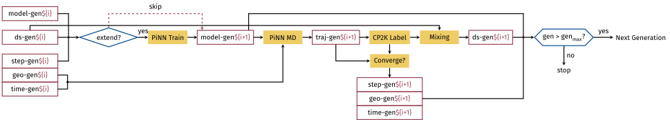

Activated Learning
The activated learning recipe actively samples a potential energy surface. The workflow is controlled by several subworkflows, including the training, sampling, and labelling processes. The overall workflow is shown in the following diagram:

The workflow can be used as either an entrypoint or a subworkflow. Some parameters that set up the initial datasets and models are taken by the entrypoint only, see below for usage and tables of parameters.
Entrypoint
Convert initial dataset and geometry from a ASE trajectory
As a example, consider a trajectory file readable by ASE as input,
the tips convert CLI tool can be used get the initial dataset and
geometries:
To run the workflow as an entrypoint (single quotes are necessary):
It is possible to restart a project from a ceratin generation, while keeping the folder structure:
When restarted in the above way the init_* parameters will be ignored. This
method is mainly for small changes of the sampled ensemble, e.g., an ad hook
change of temperature. In cases where this is not enough, it is advisable to
rerun the workflow under a different --proj.
Parameters
| Parameter | Description | Default |
|---|---|---|
init_geo |
inital geometries for sampling | input/geo/*.xyz |
init_model |
initial model or model parameters | input/pinn/pinet-adam.yml |
init_ds |
initial dataset | input/ds/init-ds.{yml,tfr} |
init_time |
sampling time scale in ps | 1.0 |
init_steps |
training steps for initial model | 100000 |
restart_from |
restart from a given generation | false |
restart_conv |
restart from a converged model (model will be retrained if false) |
false |
Subworkflow
Input/Output Channels
| Channel | I/O[idx] | Type | Description |
|---|---|---|---|
gen |
in[0] |
val |
generation of the model |
geo |
in[1] |
file |
initial geometry |
ds |
in[2] |
file |
training dataset |
steps |
in[3] |
val |
training steps |
time |
in[4] |
val |
sampling timescale |
converge |
in[5] |
val |
whether the input model is deemed converged |
The AcLe subworkflow is a recursive workflow, and the input and output shares the same data structure.
Parameters
| Parameter | Description | Default |
|---|---|---|
proj |
folder for storing results | acle |
ref |
reference calculation module | dftb |
ref_inp |
reference input file | input/dftb/xtb.py |
mpl |
machine learning potential module | pinn |
train_flags |
mlp training flags | --log-every 10000 --ckpt-every 100000 --batch 1 --max-ckpts 1 --shuffle buffter 3000 |
train_init |
mlp training flags | --init |
max_gen |
maximal number of generations | 40 |
min_time |
minimal timescale for sampling | 1.0 |
max_time |
maximal timescale for sampling | 1000.0 |
md_flags |
flags for md sampling, see ase module for details | --ensemble nvt --dt 0.5 --log-every 100 --T 340 |
collect_flags |
collection flags for the data to label | -f asetraj --subsample uniform --nsample 10 -of idx.xyz -o ds |
sp_points |
number of single points per sampled trajectory | 10 |
old_flag |
selection rule for the old dataset | --nsample 2700 |
new_flag |
selection rule for the new dataset | --nsample 300 |
sp_points |
number of single points for each sampled trajectory | 50 |
emaxtol |
toleranace for max error error | 0.020 |
ermsetol |
toleranace for energy RMSE | 0.005 |
fmaxtol |
toleranace for max force (component) error | 0.800 |
frmsetol |
toleranace for force (component) RMSE | 0.200 |
retrain_step |
number of retrain steps per generation | 100000 |
acc_fac |
factor to acceralate the sampling | 2.0 |
brake_fac |
factor to slow down the sampling | 1.0 |
Source Code: nextflow/acle.nf
#!/usr/bin/env nextflow
// The activated learning workflow ======================================================
//
// The '--proj' parameter controls the output directory. See the parameters
// sections below for other parameters that can be tuned for the workflow.
//
// written by Yunqi Shao, first ver.: 2022.Aug.29
// adapted as PiNNAcLe recipe: 2023.Apr.24
//========================================================================================
nextflow.enable.dsl = 2
nextflow.preview.recursion = true
def logger (msg) {
logfile = file("$params.publish/pinnacle.log")
if (!logfile.getParent().exists()) {logfile.getParent().mkdirs()}
logfile.append("$msg \n")
}
// entrypoint parameters ==================================================================
params.publish = 'acle'
params.init_geo = 'input/geo/*.xyz'
params.init_model = 'input/pinn/pinet-adam.yml'
params.init_ds = 'input/dataset/init-ds.{yml,tfr}'
params.init_time = 0.5
params.init_steps = 200000
params.ens_size = 1
params.restart_from = false
params.restart_conv = false
//========================================================================================
// acle parameters =======================================================================
params.ref = 'dftb' // reference (module name)
params.ref_inp = 'input/dftb/xtb.py'
params.mpl = 'pinn' // machine learning potential (module name)
params.train_flags = '--log-every 10000 --ckpt-every 100000 --batch 1 --max-ckpts 1 --shuffle-buffer 3000'
params.train_init = '--init'
params.exit_at_max_time = false
params.max_gen = 40
params.min_time = 0.5
params.max_time = 1000.0
params.md_flags = '--ensemble nvt --dt 0.5 --log-every 100 --T 340'
params.collect_flags = '-f asetraj --subsample uniform --nsample 10 -of idx.xyz -o ds'
params.sp_points = 10
params.merge_flags = '-f asetraj'
params.old_flag = '--nsample 240'
params.new_flag = '--psample 100'
params.frmsetol = 0.150
params.ermsetol = 0.005
params.fmaxtol = 2.000
params.emaxtol = 0.020
params.retrain_step = 100000
params.acc_fac = 4.0
params.brake_fac = 1.0
//========================================================================================
// Imports (publish directories are set here) ============================================
include { convert} from './module/tips.nf' addParams(publish: "$params.publish/collect")
include { dsmix } from './module/tips.nf' addParams(publish: "$params.publish/dsmix")
include { merge } from './module/tips.nf' addParams(publish: "$params.publish/merge")
include { check } from './module/tips.nf' addParams(publish: "$params.publish/check")
include { train } from "./module/${params.mpl}.nf" addParams(publish: "$params.publish/models")
include { md } from "./module/${params.mpl}.nf" addParams(publish: "$params.publish/md")
include { sp } from "./module/${params.ref}.nf" addParams(publish: "$params.publish/label")
//========================================================================================
// Entry point
workflow entry {
logger('Starting an AcLe Loop')
init_ds = file(params.init_ds)
init_geo = file(params.init_geo)
params.geo_size = init_geo.size
ens_size = params.ens_size.toInteger()
logger("Initial dataset: ${init_ds.name};")
logger("Initial geometries ($params.geo_size) in ${params.init_geo}")
if (params.restart_from) {
init_gen = params.restart_from.toString()
init_models = file("${params.publish}/models/gen${init_gen}/*/model", type:'dir')
init_geo = file("${params.publish}/check/gen${init_gen}/*/*.xyz")
init_ds = file("${params.publish}/dsmix/${init_gen}/mix-ds.{yml,tfr}")
logger("restarting from gen$init_gen ensemble of size $ens_size;")
init_gen = (init_gen.toInteger()+1).toString()
} else{
init_gen = '0'
init_models = file(params.init_model, type:'any')
if (!(init_models instanceof Path)) {
logger("restarting from an ensemble of size $ens_size;")
} else {
init_models = [init_models] * ens_size
logger("starting from scratch with the input $init_models.name of size $ens_size;")
}
}
assert ens_size == init_models.size : "ens_size ($ens_size) does not match input ($init_models.size)"
steps = params.init_steps.toInteger()
time = params.init_time.toFloat()
converge = params.restart_conv.toBoolean()
init_inp = [init_gen, init_geo, init_ds, init_models, steps, time, converge]
ch_inp = Channel.value(init_inp)
acle(ch_inp)
}
// Main Iteration and Loops ==============================================================
workflow acle {
take:
ch_init
main:
loop.recurse(ch_init)
.until{ it[0].toInteger()>params.max_gen || (it[5]>=params.max_time.toFloat() && params.exit_at_max_time) }
}
// Loop for each iteration =================================================================
workflow loop {
take: ch_inp
main:
// retrain or keep the model ============================================================
ch_inp \
| branch {gen, geo, ds, models, step, time, converge -> \
keep: converge
return [gen, models]
retrain: !converge
return [gen, models, ds, (1..params.ens_size).toList(), step]} \
| set {ch_model}
ch_model.retrain.transpose(by:[1,3]) \
| map {gen, model, ds, seed, steps -> \
["gen$gen/model$seed", ds, model,
params.train_flags+
" --seed $seed --train-steps $steps"+
(gen.toInteger()==1?" $params.train_init":'')]}\
| train
train.out.model \
| map {name, model -> (name=~/gen(\d+)\/model(\d+)/)[0][1,2]+[model]} \
| map {gen, seed, model -> [gen, model]} \
| mix (ch_model.keep.transpose()) \
| groupTuple(size:params.ens_size) \
| set {nx_models}
//=======================================================================================
// sampling with ensable NN =============================================================
ch_inp | map {[it[0], it[1], it[5]]} | transpose | set {ch_init_t} // init and time
nx_models \
| combine (ch_init_t, by:0) \
| map {gen, models, init, t -> \
["gen$gen/$init.baseName", models, init, params.md_flags+" --t $t"]} \
| md
md.out.traj.set {ch_trajs}
//=======================================================================================
// relabel with reference ===============================================================
ref_inp = file(params.ref_inp)
ch_trajs \
| map {name, traj -> [name, traj, params.collect_flags]} \
| convert \
| flatMap {name, inps -> inps.collect {["$name/$it.baseName", it]}} \
| map {name, geo -> [name, ref_inp, geo]} \
| sp
sp.out \
| map {name, logs -> (name=~/(gen\d+\/.+)\/(\d+)/)[0][1,2]+[logs]} \
| map {name, idx, logs -> [name, idx.toInteger(), logs]} \
| groupTuple(size:params.sp_points) \
| map {name, idx, logs -> [name, idx, logs, params.merge_flags]} \
| merge \
| set {ch_new_ds}
//=======================================================================================
// check convergence ====================================================================
ch_new_ds \
| join(ch_trajs) \
| check \
check.out \
| map{name,geo,msg-> \
[(name=~/gen(\d+)\/.+/)[0][1], geo, msg.contains('Converged')]} \
| groupTuple(size:params.geo_size.toInteger()) \
| map {gen, geo, conv -> [gen, geo, conv.every()]}
| set {nx_geo_converge}
//=======================================================================================
// mix the new dataset ==================================================================
ch_inp.map {[it[0], it[2]]}.set{ ch_old_ds }
ch_new_ds \
| map {name, idx, ds -> [(name=~/gen(\d+)\/.+/)[0][1], ds]} \
| groupTuple(size:params.geo_size.toInteger()) \
| join(ch_old_ds) \
| map {it+[params.new_flag, params.old_flag]} \
| dsmix \
| set {nx_ds}
//=======================================================================================
// combine everything for new inputs ====================================================
ch_inp.map{[it[0], it[4]]}.set {nx_step}
ch_inp.map{[it[0], it[5]]}.set {nx_time}
acc_fac = params.acc_fac.toFloat()
brake_fac = params.brake_fac.toFloat()
min_time = params.min_time.toFloat()
max_time = params.max_time.toFloat()
retrain_step = params.retrain_step.toInteger()
nx_geo_converge | join(nx_models) | join(nx_ds) | join(nx_time) | join (nx_step) \
| map {gen, geo, converge, models, ds, time, step -> \
[(gen.toInteger()+1).toString(),
geo, ds, models, \
converge ? step : step+retrain_step, \
converge ? Math.min(time*acc_fac, max_time) : Math.max(time*brake_fac, min_time), \
converge]} \
| set {nx_inp}
//=======================================================================================
ch_inp.subscribe {logger("[gen${it[0]}] ${it[-1]? 'not training': 'training'} the models.")}
check.out.subscribe {name, geo, msg -> logger("[$name] ${msg.trim()}")}
nx_inp.subscribe {logger('-'*80+'\n'+"[gen${it[0]}] next time scale ${it[5]} ps, ${it[6] ? 'no training planned' : 'next training step '+it[4]}.") } \
emit:
nx_inp
}